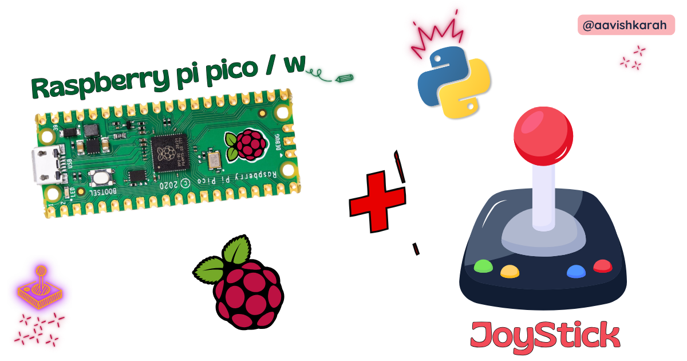
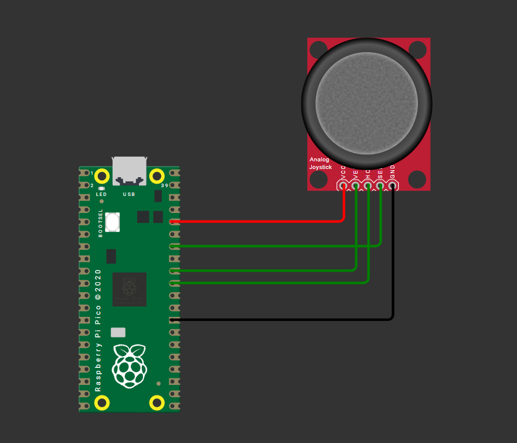

How to Connect a Joystick to Raspberry Pi Pico using MicroPython

Table of Contents
Abstract
Analog joystick modules are versatile input devices widely used in robotics, gaming controllers, and interactive embedded projects. In this comprehensive tutorial, you will learn how to interface a standard KY-023 dual-axis joystick module with a Raspberry Pi Pico microcontroller using MicroPython. By the end, you will be able to read analog X/Y axis values, detect button presses, implement debouncing logic, and integrate joystick input into your own embedded applications such as robot controllers, menu navigators, or pan-tilt camera systems.
Pre-Request
- OS: Windows / Linux / Mac / ChromeOS
- IDE: Thonny IDE (recommended) or VS Code with Pymakr extension
- Firmware: MicroPython firmware flashed on Raspberry Pi Pico / Pico 2 / Pico W / Pico 2W
- For step-by-step firmware installation, click here
Hardware Required
Raspberry Pi Pico, Arduino, sensors, and IoT maker essential Kits—perfectly matched for your learning.
- Raspberry Pi Pico / Pico 2 / Pico W / Pico 2W
- Analog Joystick Module (KY-023 or similar)
- Breadboard
- Micro USB Cable
- Jumper wires (M-F and M-M)
- 3.3V power source (Pico onboard regulator sufficient)
| Components | Purchase Link |
|---|---|
| Raspberry Pi Pico | link |
| Raspberry Pi Pico 2 | link |
| Raspberry Pi Pico W | link |
| Raspberry Pi Pico 2W | link |
| Joystick Module KY-023 | link |
| BreadBoard | large : small |
| Connecting Wires | link |
| Micro USB Cable | link |
Don't own a hardware 
No worries,
Still you can learn using simulation.
check out simulation part  .
.
⚡ Understanding Joystick Modules & ADC Reading
The KY-023 is a popular analog joystick module featuring two potentiometers (for X and Y axes) and a momentary push-button (activated by pressing the stick down). Unlike digital inputs, the analog axes output variable voltage levels proportional to stick position, which the Raspberry Pi Pico reads using its built-in Analog-to-Digital Converter (ADC).
🔹 How Analog Joystick Works
| Joystick Position | X-Axis Voltage | Y-Axis Voltage | ADC Value (16-bit scaled) |
|---|---|---|---|
| Center (Neutral) | ~1.65V | ~1.65V | ~32768 |
| Left / Down | 0V → 1.65V | 0V → 1.65V | 0 → 32768 |
| Right / Up | 1.65V → 3.3V | 1.65V → 3.3V | 32768 → 65535 |
ADC Resolution on RP2040
The Raspberry Pi Pico's ADC hardware is 12-bit, but MicroPython's read_u16() method scales the result to 16-bit range (0–65535) for cross-platform compatibility. We use this native 16-bit value directly in our code.
Note
read_u16() returns a 16-bit scaled value (0–65535). Use this value directly for consistent MicroPython compatibility across boards.
Button Input (Digital)
The joystick's built-in switch connects to SW pin and outputs:
- HIGH (3.3V) when not pressed
- LOW (0V) when pressed (active-low)
Use a GPIO pin with internal pull-up resistor for reliable button detection.
🧷 Connection / Wiring Guide (Raspberry Pi Pico to Joystick Module)
🔥 Pin Mapping Table
| Joystick Pin | Label | Raspberry Pi Pico Pin | Description |
|---|---|---|---|
| GND | GND | GND (Pin 3, 8, 13, 18, 23, 28, 33, 38) |
Common ground |
| VCC | +5V / +3.3V | 3V3 (Pin 36) |
Power supply (3.3V recommended) |
| VRx | X-Axis | GP26 (ADC0, Pin 31) |
Analog X-axis input |
| VRy | Y-Axis | GP27 (ADC1, Pin 32) |
Analog Y-axis input |
| SW | Button | GP28 (Digital, Pin 34) |
Button press signal |

fig-Connection Diagram
ADC-Capable Pins
Only GP26, GP27, GP28, and GP29 support ADC input on Raspberry Pi Pico. Ensure X/Y axis wires connect to these pins. Update code accordingly if using alternative ADC pins.
Wiring Diagram
Joystick Module Raspberry Pi Pico
───────────── ───────────────────
GND ───────────► GND (any)
VCC ───────────► 3V3 (Pin 36)
VRx (X) ───────────► GP26 / ADC0 (Pin 31)
VRy (Y) ───────────► GP27 / ADC1 (Pin 32)
SW (Btn) ───────────► GP28 (Pin 34)
Tip
Use short, shielded wires for analog signals to minimize noise interference.
Code
main.py
from machine import Pin, ADC
from time import sleep
# Initialize ADC channels for X and Y axes
adc_x = ADC(Pin(26)) # GP26 -> ADC0
adc_y = ADC(Pin(27)) # GP27 -> ADC1
# Initialize button pin with internal pull-up
button = Pin(28, Pin.IN, Pin.PULL_UP)
# ADC reading: returns 16-bit scaled value (0-65535)
def read_adc(adc):
return adc.read_u16()
# Debounced button read
def read_button():
return not button.value() # Active-low: pressed = False → return True
try:
print("🎮 Joystick Ready! Press Ctrl+C to exit.")
while True:
# Read ADC values (16-bit scaled: 0-65535)
x_raw = read_adc(adc_x)
y_raw = read_adc(adc_y)
# Optional: Map to -100 to +100 range for intuitive control
x_norm = int((x_raw - 32768) * 100 // 32768)
y_norm = int((y_raw - 32768) * 100 // 32768)
# Read button state
btn_pressed = read_button()
# Output to console
print(f"X: {x_raw:5d} ({x_norm:+4d}) | "
f"Y: {y_raw:5d} ({y_norm:+4d}) | "
f"Button: {'PRESSED' if btn_pressed else 'RELEASED'}",
end='\r')
sleep(0.1) # Small delay for stable reading
except KeyboardInterrupt:
print("\n\n🛑 Joystick interface stopped.")
Code Explanation
Imports & Initialization
-machine.ADC: For reading analog voltage from joystick axes
- machine.Pin: For configuring the button input with pull-up resistor
- time.sleep: For controlling read interval
ADC Setup
- Initializes ADC channels on GPIO 26 and 27 (ADC0 and ADC1) - These pins are ADC-exclusive; avoid using them for digital I/O simultaneouslyButton Configuration
- Configures GP28 as input with internal pull-up resistor - Joystick button is active-low: reads0 when pressed, 1 when released
ADC Value Reading
- read_u16() returns a 16-bit scaled value (0–65535) directly - No bit-shifting required — use the value as-is for calculations - Ensures compatibility with other MicroPython boards that have native 16-bit ADCsNormalizing Values (Optional)
- Centers neutral position at 0 (32768 is mid-point of 0–65535)
- Maps full range to -100 (full left/down) to +100 (full right/up)
- Uses integer division // for efficient MicroPython execution
Main Loop & Output
- Continuously reads and prints joystick state -end='\r' overwrites the same console line for clean real-time output
- sleep(0.1) prevents CPU overload and stabilizes readings
Simulation
Not able to view the simulation
- Desktop or Laptop : Reload this page ( Ctrl+R )
- Mobile : Use Landscape Mode and reload the page
Raspberry Pi Pico, Arduino, sensors, and IoT maker essential Kits—perfectly matched for your learning.


🛑 Troubleshooting (Common Issues & Fixes)
❌ Issue 1: ADC readings are noisy or unstable
✅ Causes: - Long/unshielded wires picking up EMI - Power supply fluctuations - Missing decoupling capacitor
✅ Fix:
# Implement simple software averaging
def read_adc_avg(adc, samples=5):
total = sum(adc.read_u16() >> 4 for _ in range(samples))
return total // samples
❌ Issue 2: Button registers multiple presses (bounce)
✅ Cause: - Mechanical switch bounce causing rapid HIGH/LOW transitions
✅ Fix:
def read_button_debounced(pin, debounce_ms=50):
state = pin.value()
if state == 0: # Press detected
sleep_ms(debounce_ms)
if pin.value() == 0:
return True
return False
❌ Issue 3: Joystick doesn't return to exact center (drift)
✅ Cause: - Potentiometer tolerance variations - ADC reference voltage instability
✅ Fix:
# Calibrate center values at startup (16-bit range)
CENTER_X = read_adc(adc_x) # ~32768 at neutral
CENTER_Y = read_adc(adc_y)
# Use deadzone to ignore minor drift (adjust threshold for 16-bit)
DEADZONE = 1500 # ~±2.3% of 65535 range
if abs(x_raw - CENTER_X) < DEADZONE:
x_norm = 0
❌ Issue 4: Pico resets when moving joystick vigorously
✅ Cause: - Rare: Current spike from module or wiring short
✅ Fix: - Double-check wiring: VCC to 3V3 (not 5V), no shorts between pins - Add ferrite bead or 10Ω resistor in series with VCC line for extra protection
🏁 Conclusion
You have successfully interfaced a KY-023 analog joystick with a Raspberry Pi Pico using MicroPython 🎉. You now understand:
- How analog joysticks output variable voltage via potentiometers
- How to read and scale 12-bit ADC values on the RP2040
- Best practices for button debouncing and noise reduction
- Techniques to normalize and calibrate joystick input for real-world applications
With this foundation, you can build interactive projects like: - 🤖 Remote-controlled robot chassis with directional input - 🎮 Custom USB HID game controller (using TinyUSB) - 📡 Pan-tilt camera platform with smooth servo control - 🧭 Menu navigation system for OLED/TFT displays
Next Steps
- Combine joystick input with PWM servo control for robotic arms
- Add I2C OLED display to show real-time axis values
- Implement USB HID to make the Pico act as a PC gamepad
- Explore interrupt-driven button handling for responsive UIs
Extras
Components details
- Joystick Module KY-023: Datasheet | Pinout Guide
- Raspberry Pi Pico / Pico 2 : Pin Diagram
- Raspberry Pi Pico : Data Sheet
- Raspberry Pi Pico 2 : Data Sheet
- Raspberry Pi Pico W : Data Sheet
- Raspberry Pi Pico 2 W : Data Sheet